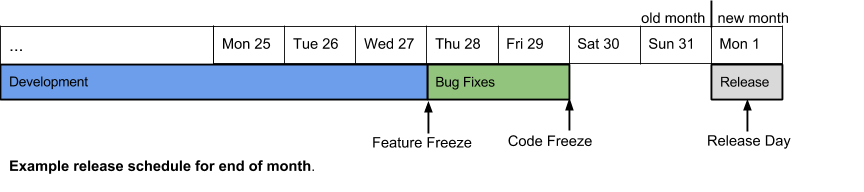

This document explains how to make a release of the Checker Framework, the Type Annotations Compiler,
and the Annotation File Utilities.
The process takes around 3 hours (including manual steps) when all goes according to plan.
However, the lengthiest steps are automatic so you will be able to work on other tasks.
Contents:
Release process
Checklist of steps a release person must follow
- Once ever:
- Follow the steps in the Pre-release Checklist
in the Release Process document. Some of these steps can take days to complete as they
involve obtaining permissions.
- First day of the development milestone:
- Plan the feature freeze, code freeze and release dates for the following two months. The release date should be the first business day of the month. (Avoid releasing
near the end of a month instead of the beginning of the next month, as that makes it easier for users
to keep track of the cadence of our releases. For example, having a June 1st and a June 30th release makes
it harder to tell that the June 30th release is meant for distribution in the month of July.)
-
Send an e-mail to the
checker-framework-dev, annotation-tools-dev and jsr308-langtools-dev mailing lists with these dates.
- One week before Feature Freeze:
- Remind bug owners of their bugs outstanding.
- Two business days before Feature Freeze:
- E-mail checker-framework-dev, annotation-tools-dev and jsr308-langtools-dev reminding
users of the upcoming Feature Freeze and the requirements for this deadline, including
the requirement for changelogs to be complete.
- The work morning after Feature Freeze:
- Ensure that all the continuous integration jobs are passing.
- Ensure that
the changelogs and documentation for the Checker Framework, Type Annotations Compiler and AFU are complete by following
these instructions up to and including the "Review the changelogs and documentation" step.
- E-mail Mike asking him to vet the changelogs
that are checked in.
- E-mail checker-framework-dev, annotation-tools-dev and jsr308-langtools-dev reminding
users of the upcoming Code Freeze and the requirements for this deadline.
- The work morning after Code Freeze:
Milestone Phases
|
Development
|
Bug fixing
|
Release
|
|
(Varies, typically 3 to 4 weeks)
|
1 business day
|
1 business day
|
|
Deadlines:
|
Feature freeze
|
Code freeze
|
Release
|
Example timeline:

Description of the phases and deadlines
Development
During the development phase, arbitrarily large or complex changes may be pushed.
Feature freeze
By the feature freeze deadline, all new feature code, associated tests, and documentation
must be pushed. If a feature is not complete by this time, then it should be delayed until the next
release. By this time, all users should update the relevant project’s changelog to include
features and bug fixes they have made during this development cycle (not including bug fixes made
in the day that follows).
Bug fixing
During this phase bugs are fixed, including minor bugs that may have been discovered
(by the new tests or otherwise) in the feature implementation or documentation. You are allowed
to fix any bug that you want, add new tests and documentation, etc., during this time. But no
new features may be implemented. Example bugs that would be fixed during this phase are bugs
revealed by Jenkins that were not revealed by the test suites that were run before pushing a feature.
Code freeze
By code freeze, the code is assumed to be in a shippable state. Pushes to the
repository are no longer allowed.
Release
The person responsible for making the release runs the release scripts and other manual tasks
for the release (note that any pushes during this phase force the automated tests to restart and
are likely to delay the release).
Deadline enforcement
The following are only enforced for the 'master' branch from which the release is performed:
- Any large or complex change (i.e. a feature change or a design change) pushed after
feature freeze will be reverted.
- Any fix for a bug pushed after code freeze for which an exception was not made will be reverted.
- If a critical bug is discovered late and its fix is not checked in with enough time
for Jenkins tests to complete before Release Day, then the release is delayed.
Step by Step
More information about the steps is
provided in the code comments of the main() functions of the release_build
and release_push scripts. Please read those comments if you have never done so before.
Answering 'no' to a prompt does not exit the script unless otherwise indicated.
Be sure to carefully read all instructions on the command-line before answering 'yes' to a prompt.
This is because the scripts do not ask you to say 'yes' after each step, so you may
miss a step if you only read the paragraph asking you to say 'yes'.
- If you have never made a release before, follow the instructions in the
Pre-release Checklist.
- Download and install the lastest version of Eclipse. Check that the Eclipse version
matches the version listed in
the Eclipse plugin manual.
-
Log into Buffalo
ssh $USER@buffalo.cs.washington.edu
-
In a user-specific temporary directory, clone/update the Checker Framework repository (it contains the release scripts).
mkdir -p /scratch/$USER/jsr308-release
cd /scratch/$USER/jsr308-release
(cd checker-framework && git pull --quiet) || git clone --quiet https://github.com/typetools/checker-framework.git
cd checker-framework/release
- Review the changelogs and documentation
Ensure that the changelogs and documentation for the Checker Framework, Type Annotations Compiler and
AFU are complete. First follow the instructions at content guidelines. Then,
run release_build in a mode that reviews the documentation only:
cd /scratch/$USER/jsr308-release/checker-framework/release
python release_build.py all --review-manual
Note: This step can be performed in advance of the release day. It is recommended
that this be done the work morning after Feature Freeze.
- Run release_build to create the release artifacts and place them in the development website
python release_build.py all --auto
For verbose debugging output, use the --debug option.
Note: The "all" argument specifies that all projects should be built.
There has been some work done in order to select only specific projects (JSR 308 compiler, AFU, Checker Framework)
to be built but more work still needs to be done. Just pass "all" for now.
See also Buffalo Integration for more information
on the option "--auto", which you can omit in order to
be asked more questions during the build.
-
Run release_push to move release artifacts from the development website to the live site and to Maven Central
python release_push.py release
For minimal prompting, use the --auto option.
Note: The "release" argument states that you intend
to do an actual release. If you just want to test the script, leave out "release"
and the script will run but not update anything.
If you get an obscure error about permissions, try running the release_push script several times
in a row. This will sometimes update the repository permissions such that the script can proceed
further each time.
Continuous integration (nightly) tests
The following continuous integration tests should all pass before you make changes that you need to test. If not, notify the
relevant team members.
- The following Travis builds should be passing (refresh this page to see the latest status):
- Annotation File Utilities:

- Checker Framework:

- checker-framework.demos:

- checker-framework-inference:

- Daikon:

- daikon-typecheck:

- guava-typecheck:

- plume-lib:

- plume-lib-typecheck:

- plume-lib-check-index-new:

- Sparta:

- Check that a daikon-typecheck Travis job was triggered by the last commit of the Checker Framework before the code freeze.
Pre-release Checklist
If you have not performed a release before you must follow these steps.
| 1. |
Ensure you are a member of the types_www and pl_gang groups
Run the command "groups" on the file system (perhaps on Buffalo).
If the group types_www or pl_gang do not appear in the list, email the appropriate
person to be added (currently Michael Ernst and Werner Dietl for types_www and
Michael Ernst for pl_gang).
|
| 2. |
Import the Checker Framework signing key for PGP
SSH into Buffalo and run the following command:
gpg --allow-secret-key-import --import /projects/swlab1/checker-framework/hosting-info/release-private.key
Note: The password for this key is located in the file
/projects/swlab1/checker-framework/hosting-info/release-private.password
and is used by the release_push script to sign Maven artifacts.
|
| 3. |
Sign up for a Sonatypes Account
You will likely want to do this a few days in advance.
Directions can be found here.
Remember to be asked to be added to the org.checkerframework repository by creating
a ticket (see the note
here).
If after signing up for a Sonatype JIRA account you are not able to sign in to
https://issues.sonatype.org
to create a ticket, there may be a configuration problem with your account. In that case, sign up for a
second Sonatype account, and use that account to file a ticket indicating that you cannot sign in
with your first account.
|
| 4. |
Add your account information to settings.xml in your home directory.
Create a ~/.m2/settings.xml file with the contents specified in
/projects/swlab1/checker-framework/hosting-info/release-settings.txt
using the information you just created for your Sonatypes Account on Buffalo or other
network host. Since the file contains your password, make it non-readable: chmod og-rw ~/.m2/settings.xml
|
| 5. |
Copy login related settings from your .hgrc file to a .hgrc in your home directory
in Buffalo.
On your local machine, you probably have an .hgrc file in your home directory
with login information for Mercurial. Copy the login related parts of this file to
your home directory on Buffalo. Copying the entire file may lead to path issues.
|
| 6. |
Complete the Eclipse plugin pre-build checklist
Follow the instructions here.
|
| 7. |
Get edit privileges for Checker Framework, JSR 308 compiler, Annotation Tools
Once a release has been completed, you will be prompted to update issues in the
issue tracker for each project that has been released.
You will need to be a "developer" for each project so that you have update privileges for
the issue trackers.
You should be listed as a member of typetools on Bitbucket and a committer on GitHub.
You should be listed as a member of typetests on Bitbucket and a committer on GitHub.
|
| 8. |
Ensure that you can see the status of all Travis relevant to the release
Ensure that the status of all the Travis projects listed here is displayed correctly.
|
| 9. |
Read the Checker Framework Development Process document
A release person has responsibilities each month in addition to performing the release.
The Checker Framework Release Process document
explains these responsibilities in detail. Please re-read the checklist in this document at the beginning
of each month that you are the designated the release person, and help keep this document up
to date with the latest best practices.
|
| 10. |
Install html5validator
If you are going to perform the release on buffalo, you may need to install
html5validator. If html5validator --version issues any errors, try running
pip install --user html5validator.
|
| 11. |
Run release_build once
To save time on release day addressing potential configuration issues, before your first
release day, ensure that release_build is working correctly
by following steps 2, 3 and 5 of the Step by Step section.
release_build still needs to be re-run on release day (even if no changes
were pushed to any repositories since the last run of release_build) in
order for the release date to be correct in all documents.
|
Release Process Overview
This section first explains the structure of the projects on disk on Buffalo, then lists scripts used during the release process.
File Layout
| Release Directory |
|---|
| /scratch/$USER/jsr308-release |
Contains repositories and scripts to perform a release |
|
build |
Contains repositories for:
annotation-tools, checker-framework, jsr308-langtools, plume-bib, plume-lib, stubparser
These repositories are used to build the Checker Framework and its dependencies.
|
|
interm |
Contains repositories for:
annotation-tools, checker-framework, jsr308-langtools, plume-bib, plume-lib, stubparser
The repositories in build are clones of repositories in interm. The repositories
in interm are clones of the GitHub/Bitbucket repositories. This is so that
we can test and push the release to the interm repositories then check the
release before we have made any irreversible changes. Then, when the release
is validated, all we do is run "git push" or "hg push" on all of the repos in interm.
|
|
sanity |
Directory used by the release_push script to do sanity checks.
|
|
checker-framework/release |
The directory where the release scripts are run from. Any changes made under this directory
won't be automatically committed when the release is committed.
|
| Jenkins Tools Directory |
|---|
| /scratch/secs-jenkins |
Contains files used to run Jenkins including versions of Java. |
|
java |
Contains the versions of Java used to build the release. |
|
tools |
Contains the Hevea library and some TEXINPUTS for the release. |
| Staging (Development) Website Directory |
|---|
| /cse/www2/types/dev |
The file system location of the development staging website:
https://checkerframework.org/dev. |
|
<project>/current |
The staging analogue to /cse/www2/types/<project>/current directory. The latest release is copied from this directory
to the /cse/www2/types/<project>/current by the release_push script after a prompt.
|
|
m2-repo |
The location of the in-house staging version of the Maven repository. It is accessed through URL:
https://checkerframework.org/dev/m2-repo
|
Release Scripts
As mentioned above, in order to release the Checker Framework you must run two scripts,
release_build.py and release_push.py but there are supportings scripts and files in the
release directory. Some of these files are described below.
| release_build.py |
Reverts the build/interm repositories to the state of their master repositories in GitHub/Bitbucket.
It then builds the projects and all their artifacts and then stages a development
version of all websites to
https://checkerframework.org/dev/
This script is thoroughly documented in code comments located in its main() function.
|
| release_push.py |
Verifies the release at
https://checkerframework.org/dev/
is correct through scripts and manual steps. When the user is satisfied the website
is correct it deploys the website to the live website:
https://checkerframework.org/.
It also pushes Maven artifacts to our checker-framework.com repo and Maven central.
Furthermore, there are a number of prompts to manually build the Eclipse plugin and
test various components.
This script is thoroughly documented in code comments located in its main() function.
|
| release_utils.py |
Utility methods used in both release_push and release_build. |
| sanity_checks.py |
Contains methods to run various sanity checks. These methods are called from release_push.py
|
| release_vars.py |
Global variables used in release_push, release_build, and sanity_checks. These should NOT
be used in release_utils as release_utils is supposed to consist of self-contained
reusable methods. These variables are tailored for running the scripts on
buffalo.cs.washington.edu
|
| release.xml |
The previous release script used Ant to do a number of tasks. Rather than
reinvent the wheel, we still use the targets from this script.
They are called from release_push and release_build.
|
Changelog Guidelines
Each developer is responsible for updating project changelogs to reflect changes they
have made each month. The changelogs should be updated by "feature freeze" though at the
latest this should be done before "code freeze". Before releasing, the person performing
the release will be asked to verify the changelogs. Please check that
there aren't typos (i.e. missing release date/version information, spelling errors, etc...).
Also check that the changelog obeys the guidelines below.
Content Guidelines
- Only (and all) changes that affect users go into the changelog.
If a change is breaking, no matter how small, mention it.
- List all issues (in issue trackers) resolved since the previous release, for
the Checker Framework (previous release,
issues query,
current changelog),
Annotation File Utilities (previous release,
issues query,
current changelog),
and jsr308-langtools (previous release,
issues query,
current changelog).
-
Examine the version control logs since the last release tag to ensure they are reflected in the changelogs when appropriate.
This can be done from the command-line with:
cd $CHECKERFRAMEWORK && git log --name-status `git describe --abbrev=0 --tags`..
cd $CHECKERFRAMEWORK/../annotation-tools && git log --name-status `git describe --abbrev=0 --tags`..
cd $CHECKERFRAMEWORK/../jsr308-langtools && hg log -r `hg log -r "." --template "{latesttag}\n"`:
or by opening the following commit queries for jsr308-langtools,
the Annotation File Utilities and the
Checker Framework.
-
Even if some code has been committed to the repository, don't
announce the feature until it has been documented in the manual.
Style Guidelines
- Changes are written from the user's perspective. Don't include implementation details that users
don't care about.
- To be consistent, write in the past tense (e.g. "Added option for verbose error messages").
- Lines should not exceed 80 characters wide.
- Break the different programs into their own sections. See notes on release 1.7.0 and 1.5.0 for an
example. Tools like the Eclipse plugin should have their own section within the
Checker Framework release notes (excluding issue fixes from the issue tracker).
- Be specific. Don't write something like "added a few options to Eclipse plugin". Do write "added
options to the Eclipse plugin to include stub files, ignore warnings, and show verbose output."
Backing Out an Uncommitted Release
At the time of this writing, there are 2 steps that cannot be reverted.
- The push from the interm repositories to the GitHub/Bitbucket (release) repositories
- The release of the staged Maven artifacts
If you have executed either of these steps and then realized there is a breaking error, you should do another
release. The release script will allow you to do a point release like "1.8.0.1" when a version
"1.8.0" already exists.
If you have NOT committed an irreversible step then you can
follow the steps below to point the live release to a previous release. You can then redo the original
release. Make sure to say "yes" when the release script asks you to delete the old directories.
Manual Steps to Back Out a Release
Note: You may find yourself copying release directories for some
reason or other. It is important to remember that the symlinks may be absolute. You should check any
symlinks that may be affected by the move and ensure they point to the new location and not the old one.
Future Improvements
Below is a roughly priority-ordered list of future improvements. In a perfect world we would do
all of these. At the moment, I believe only the first 2 (Open JDK Javadoc Fixes,
and More Sanity Checks) should have any appreciable priority.
Open JDK/JSR308 Javadoc
Generating the Javadocs for the entire JDK is not simple. We have previously generated these but have
not updated them in a while. They can be found here:
https://checkerframework.org/jdk-api/
When we generate javadoc for the Type Annotations Compiler and Checker Framework we link against these docs.
But because they were generated in a faulty manner in the first place, there are many broken links related to
package summaries of the jdk-api docs. It is highly unlikely that users will ever run into these links, since
they occur in pages like Swing's package summary, but nonetheless it would be good to build these docs
in the proper manner with no broken links.
Tasks:
- Figure out the best way to build the Open JDK Javadoc.
- Add a release script step to build the Open JDK Javadoc.
- Add a release script step to copy this javadoc to /cse/www2/types/checker-framework/jdk-api.
- We may also want to put jdk-api into the release directory instead of overwriting it during each release.
- Update this document to reflect the new steps.
More Sanity Checks
There are likely more sanity checks we might want to run during the release process. One such example
would be running the tutorial from the command line.
Tasks:
- Implement one of the sanity checks mentioned in this section.
- Add your sanity check to the appropriate location in the release_push script.
- Update this document to reflect the new steps.
Sanity Checks:
Buffalo Integration
If we could have Buffalo run the release_build script nightly, we could head off broken links and other
release related errors. There is an "--auto" option for this specific reason but a number of
errors start happening when we run the script from Buffalo.
Tasks:
- Create a Buffalo task to run the release_buld script using the "--auto" option.
- Observe the output of this task and identify possible errors.
- Fix up all observed errors until the release_build script runs without error.
- We probably want to move the link checking of the development site to the release_build script and
write it out to disk. This will allow the developer releasing the framework to consult pre-made
link-checking results rather than waiting for the link checker to execute in the push script.
Auto-copy Release Scripts
The first step in running the release process, after the pre-release checklist, is to copy the
release scripts into the jsr308-release directory. We could automate this.
Tasks:
- Create a read-only script in jsr308-release/scripts.
- Edit the script so that it downloads all release scripts into the jsr308-release directory.
- Update this document to reflect this new process.
Option Parsing
There is currently some primitive option parsing written into the release scripts. We should use
Python's built-in option parsing library. There are multiple built-in libraries. Please use the latest one.
Tasks:
- Look up the latest Python parsing library.
- Replace the option parsing in the release_build.py and release_push.py scripts with library calls.
Optional Projects
A user might want to test the release_build script only on a specific project. Some work has gone into
the ability to select a project to build. However, this currently doesn't take into consideration of dependencies.
It might be more hassle than it's worth to implement this feature. We should either complete the implementation
or remove the partial implementation that already exists. See
REPL Mode.
Tasks:
- Improve option parsing to allow the user to select only certain projects to build.
- Improve scripts to resolve dependencies between projects and only build the selected projects and
their dependencies.
REPL Mode
The current script is built in an imperative style with little use of object orientation. This improvement
would create methods or objects that further encapsulate the current set of steps. We could then provide
an easy way to execute these steps from the Python REPL. This would allow the user to execute individual steps
in whatever order they saw fit from the Python REPL. This could also be used to
automatically back out the current release or the ability to edit/debug the release steps more easily.
Tasks:
- Further separate the steps of the release process.
- Provide a default parameterization for these steps to make them easily runnable from the
command line.
- Provide a script to launch Python with these commands on its path.
- Update this README to document the new functionality.
Automate the Eclipse Build
The Checker Framework Eclipse plugin is the cause of the most burdensome manual steps in the release
process. There exist ways to automate the plugin build and tests. However, the process is complicated and
would take a while to perfect. It may or may not be worth it.
Tasks:
- Use Ant or other methods to automate the Eclipse build.
- Add to the release script targets for updating version numbers and other relevant fields
of the Eclipse plugin for the release.
- Add a step(s) to build/test the Eclipse plugin from the command line to the release script.
- Update this README to include the new steps.